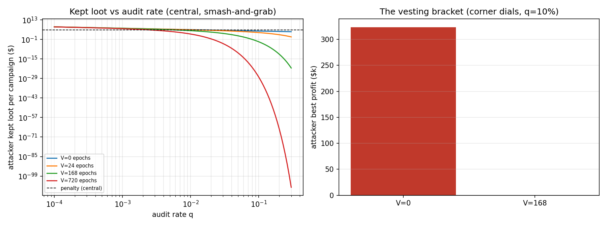

In plain language
Companion to RESULTS - v12.0 Aggregator Collusion.md. In EDEN's design, your device doesn't write directly into the world ledger — that would be like every driver in the country mailing receipts to one courthouse. Instead, bonded "toll booths" (aggregators) collect thousands of engagement receipts each hour, mathematically seal them into one tamper-proof summary, and pass that up to the ledger. This drill asked: what if a toll booth is crooked? The pass/fail lines were written down before the code existed.
What a crooked booth can and can't do
The math seal is genuinely unforgeable: a booth cannot invent receipts out of thin air, misspell the totals, or let the same person's same hour count twice — the seal won't close over a lie it can see. What a crooked booth can do is wave through counterfeit receipts (fake engagement, forged by compromised devices) without checking them properly, taking a cut of the minted money. It can also try to slow-walk receipts it doesn't like.
Three defenses were priced: spot re-checks (a random fraction of booths get their raw receipts pulled and re-verified — the booth never knows which); a big deposit plus the operators' one-per-lifetime identities, all forfeited on a catch; and — the quiet star of the show — a one-week hold before minted money fully belongs to anyone, so when fraud is caught, the loot is still in the drawer and gets clawed back.
What the drills found
Drill 1 — how many spot-checks does honesty require? Almost none. Checking fewer than 1 in 100 batches makes fraud a money-loser at every scale of cheating we could construct — because one catch costs the crooked booth its deposit, its operators' identities, months of income, and the still-held loot. Total cost of running those audits: about one ten-thousandth of the money flowing through. Honesty here is nearly free; getting caught is nearly fatal. (This echoes an earlier finding in the project: you don't need to watch everyone — you need unpredictable checks and consequences that bite.)
Drill 2 — the week-long hold is the whole ballgame. We deliberately weakened everything — tiny deposit, single operator, the booth keeping 100% of the take, sloppy detection — and let the attacker grab maximally fast. Without the hold, that smash-and-grab clears +$323,000. With the one-week hold, the same attacker's expected haul rounds to one cent, and the smartest move becomes not cheating at all. Payment delayed by a week is a small ask of honest creators; it converts robbery into a donation to the system. The drill's recommendation: write the week-long hold into the protocol's constitution.
Drill 3 — a conspiracy of booths doesn't help. Even a cartel running the maximum allowed 15% of all booths, cheating flat-out just to cause damage, keeps about $277M — six thousandths of one percent of a year's money flow — while burning $863M of its own deposits and identities to do it. Cheating at scale scales the punishment too. There is no safety in numbers, only bulk pricing on regret.
Drill 4 — the same hour can't be cashed at two booths. A cheater submitting the same engagement through two different booths gets caught not by either booth but by the courthouse itself, which keeps one master list of every claim's unique fingerprint. We injected a million duplicates; zero got through.
Drill 5 — the road not taken. What if, instead of many bonded booths, there were just one big trusted one — no deposit, no spot-checks, the way most of today's platforms work? A quiet 10% skim, discovered by outsiders a year later, keeps $438 billion — about 1,580 times the capped cartel's haul. That's the measured reason EDEN uses many small, bonded, watched, replaceable booths instead of one big trusted gate. And if a booth spitefully drops your receipts? You hold a signed copy and simply hand it to a different booth — worst measured delay, about three hours.
The one-line verdict
A crooked toll booth in EDEN can't forge the seal, can't cash the same hour twice, can't profit from waving counterfeits through once even 1-in-100 batches get spot-checked — and with the one-week hold on fresh money, even the fastest smash-and-grab leaves the thief poorer than doing nothing — all of it resting, as always, on the one assumption this drill deliberately spots the attacker for free: that counterfeit receipts exist at all, which is the device-security question only the real-world pilot can price.
Usual honesty: calculator-grade drills with stated dials; bars registered before the code existed; one harness flaw found by its own bar, repaired in the open, original archived; both seeds agree with the exact math. Run and written by Claude Fable 5, July 7, 2026.
Figures

Technical results
Run: July 7, 2026. Spec: v12 SPEC - Aggregator Collusion & Re-Aggregation Audit (registered).md — bars R0–R5 fixed before code. Engine: aggregator_collusion_sim.py; committed artifacts: results_v12.json, fig_v12_audit_economics.png. Seeds 7 + 11. Every number traces to results_v12.json.
Engine-provenance disclosure (program corrections discipline, v9 precedent): the first run failed its own harness bar R0 — the corner V=168 cell's vesting-survival event has probability ~2×10⁻⁸, so all 100k MC draws were zero, the standard error degenerated to 0, and the 3σ mean-test became ill-defined. This is a defect in the check, not the model: repaired pre-readout by adding a Poisson count-test for rare-event cells (survival counts vs expectation) while always validating E[T], which is well-resolved everywhere. Original engine and results archived (aggregator_collusion_sim_PRE-FIX_archive.py, results_v12_PRE-FIX_archive.json); bars untouched; the closed form under test unchanged; all non-harness numbers identical across both runs.
Verdict in one line: with payout vesting and clawback, auditing less than 1% of batches makes aggregator fraud a money-loser — and without vesting the same attacker profits, so the 7-day vesting window enters the architecture as a load-bearing requirement, shown by breach.
Bar summary (6/6 as registered, including the expected-fail bracket)
| Bar | Registered | Measured | Result |
|---|---|---|---|
| R0 harness | MC (7+11) agrees with closed forms, 3σ | all cells agree (rare-cell Poisson repair disclosed above) | PASS |
| R1 break-even audit rate | q* ≤ 5% | q* = 0.62% | PASS |
| R2 honest cost at q_op | ≤ 0.5% of gross mint | 0.010% (q_op = 1%) | PASS |
| R3 vesting bracket (corner, q=10%) | V=0 profitable (expected FAIL of no-vesting); V=168 deterred | V=0: +$323k best profit; V=168: $0 (abstaining is optimal) | PASS (bracket) |
| R4 blast radius at 15% market cap | kept mint ≤ 0.5% of annual gross | 0.0063% ($277M kept, ring ROI −$586M) | PASS |
| R5 cross-aggregator double-count | 100% settlement rejection | 0 / 1,000,000 duplicates accepted | PASS |
Findings
F1 — The audit is almost free because the clawback is ruinous per catch (the v8.1 pattern, again). Break-even audit rate at central dials: q* = 0.62% of batches, against a $575.5k per-catch penalty (bond $250k + 3 operator identities $216k + 6 months of fees clawed). The published q*-vs-vesting curve: V=0 → 1.74%, V=24 → 1.28%, V=168 → 0.62%, V=720 → 0.26% (JSON q_star_vs_V). At the 1% operating rate, honest cost is 0.010% of gross mint — re-aggregation audits cost the system rounding error.
F2 — Vesting is load-bearing, shown by breach (the registered bracket). At the adversary-favoring corner (small bond, one operator, ring-owned aggregator keeping 100%, weak detection d=0.5, m=100), a smash-and-grab attacker at q=10% audits profits +$323k with no vesting — the geometric time-to-catch (~10 epochs) is enough to bank the loot. With the 7-day vesting window, the identical attacker's kept loot collapses to ~$0.01 expected (survival probability 0.9¹⁶⁸ ≈ 2×10⁻⁸) and abstaining becomes the best response. Consequence for canon: epoch payouts vest after ~168 epochs should be written into Architecture §6 as a protocol rule — a 7-day delay costs honest creators little and converts the aggregator smash-and-grab from a trade into a donation. (Interaction to note at ratification: outcome-linked classes already carry longer delays; this floor applies to the time-mint lane.)
F3 — No safety in numbers, and a bounded blast radius (gate-16 candidate). Catches are independent per batch, so a ring running 1,500 aggregators (the 15% market cap) at the damage-maximizing φ=1 keeps an expected $277M across its campaigns — 0.0063% of annual gross mint — while burning $863M in bonds, identities, and clawbacks (ring ROI −$586M). Collusion scales the loot and the losses by the same factor; the cap bounds even the irrational-damage case to noise.
F4 — Double-counting across aggregators is dead by construction, verified. The settlement layer's global per-epoch nullifier set rejected 1,000,000 of 1,000,000 injected cross-batch duplicates — the §6.2 collision design does at the batch boundary exactly what it does at the device boundary. This closes the one attack the per-batch ZK proofs structurally cannot see.
F5 — The counterfactual is the whole argument for the market structure. The Trusted Single Aggregator (one central batcher, no bond, no audit, caught only by external detection ~12 months out) laundering a 10% skim keeps $438B — 1,580× the capped ring's take. The bonded, audited, capped, choose-your-own-aggregator market is not decoration; it is a four-orders-of-magnitude reduction in the worst case. Censorship (report cell): with free aggregator choice and signed receipts, 20% censoring aggregators produce a p99 inclusion delay of 3 epochs — dropping claims annoys people for hours, it does not silence them.
Gate-16 candidate (published whatever the numbers are)
(a) Payout vesting ≥ 168 epochs on the time-mint lane (measured wall: the corner attacker is profitable at V=0, deterred at V=168); (b) re-aggregation audit rate ≥ 1% of batches, private-sample per §6.5 (break-even 0.62%; honest cost 0.010%); (c) aggregator bond ≥ $250k-equivalent EBI-indexed with ≥ 6-month fee clawback; (d) aggregator-market cohort cap ≤ 15% (blast radius 0.0063% of annual mint at the cap); (e) global settlement nullifier set mandatory (100% duplicate rejection verified).
Honest limits (from the spec, carried)
The ring's forged attestations are assumed free — gate 9 is priced around, in the attacker's favor; if attestation forgery is expensive, every number here gets better. Audit detection (d, m) and cost stand in for a re-verification market that doesn't exist yet; the audit jury's own corruptibility inherits v11's civic-validation economics (noted, not modeled). No investigation cascade after a catch, no law, no reputation effects — all credited $0 to the defense. Renewal re-entry at list prices is allowed indefinitely. Aggregate-only telemetry honored throughout. Existence-and-shape under stated dials — not a forecast.
Feeds: gate 16 (proposed); Architecture §6 ratification-readiness (with the vesting rule as a proposed amendment); fee-dial cross-check against Benchmark - Proving Cost Envelope. The v11 + v12 pair now covers both §11.1 and §11.2 registrations. Run and written by Claude Fable 5, July 7, 2026. Bars as registered; none moved; one harness repair disclosed and archived.
Raw data